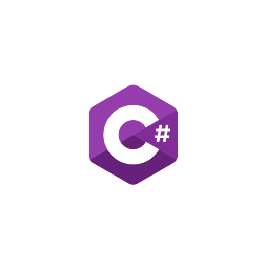

O que é o C# (C Sharp)? 
C# é uma linguagem de programação, multiparadigma, de tipagem forte, desenvolvida pela Microsoft
como parte da plataforma .NET. A sua sintaxe orientada a objetos foi baseada no C++ mas inclui
muitas influências de outras linguagens de programação, como Object Pascal e, principalmente, Java.
Sempre há a possibilidade de se conhecer melhor um programa um programa. Sentiu curiosidade para
saber mais? Clique aqui.